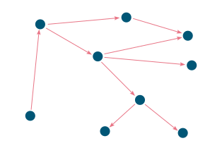
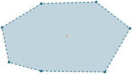
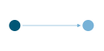
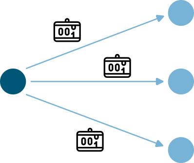
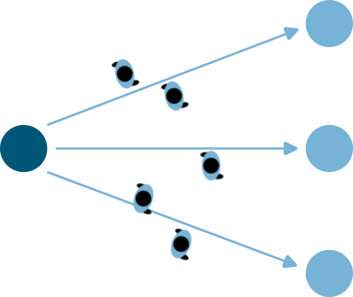

Docs
Routing
Routing#
Routing in pedestrian dynamics simulations refers to the process of determining how individuals navigate through a physical environment, such as a street, building, or public space. In JuPedSim this consists of two fundamental parts:
- Route planning:
Route planning models the decision-making process of the agents on their route through the simulation. On base of the underlying route, the target of the agents is distinguished. These may include condition-based decisions, where the way of different agents on the same route may differ.
- Way finding:
Wayfinding is the process by which agents decide on a route to reach their target. This process typically considers factors like the agent’s goal (target), the layout of the environment, available pathways, and the agent’s knowledge of the surroundings.
For more information how this can be included in a JuPedSim simulation, and what the underlying principles are, see the following sections.
Route planning#
For modeling complex scenarios in which the agents will move through different specific targets on their way, it is possible to define routes. These routes are modeled as a network (so called Journeys), consisting of:
targets as nodes (so called Stages) ,
directed connections between these targets, indicating the next target, as edges (so called Transitions),
The illustration of such a network can be seen below:


Graphical representation of the underlying routing network of a more complex simulation. Each circle represents an intermediate stage, while the arrows the corresponding transitions.#
In the following sections, we will explain how to set-up such Journeys in JuPedSim.
Stages#
In JuPedSim, a stage refers to an interim target that the agent aims to reach. A stage counts as completed when the agent reaches it; the agent then continues to the next stage. The various types of stages will be explained below.
Note
All stages added to the simulation need to be inside the walkable area. This needs to be uphold when the geometry is changed.
Waypoint#
The most fundamental kind of stage is a Waypoint. It represents a target the agent needs to reach.
For the way finding, the agent always targets the Waypoint directly.
A Waypoint is considered completed once agents arrive within a designated distance from the defined Waypoint.
The figure below shows how a Waypoint is used in the simulation. Here the center (colored orange) represents the Waypoint, and the surrounding blue area indicates the zone an agent must enter to complete the stage.

Representation of a Waypoint (colored orange) with the given distance (orange line).#
A Waypoint at \((0.6, -1.4)\) with an accepted distance of 2m can be added to the simulation via:
waypoint_id = simulation.add_waypoint_stage([0.6, -1.4], 2, region_id=0)
Exit#
An other stage type is the Exit. As the name suggests, this stage models the exits within the simulation.
The ExitStage designates an area where agents are marked for removal from the simulation upon their arrival.
The removal itself is done at the beginning of the next iteration step.
As a target the agents will aim for the center of the exit polygon.
Note
Agents will be removed from the simulation when they reach the designated exit area.


Representation of an Exit (colored blue). The agents will aim for the center (colored orange).#
An exit located in the polygon \((-0.2, -1.9), (0.2, -1.9), (0.2, -1.7), (-0.2, -1.7)\) can be added to the simulation via:
# create exit from coordinates
exit_id = simulation.add_exit_stage([(-0.2, -1.9), (0.2, -1.9), (0.2, -1.7), (-0.2, -1.7)], region_id=0)
# create exit from shapely.Polygon
exit_polygon = shapely.Polygon([(-0.2, -1.9), (0.2, -1.9), (0.2, -1.7), (-0.2, -1.7)])
exit_id = simulation.add_exit_stage(exit_polygon, region_id=0)
Note
When adding exits close to the boundary of the walkable area make sure that there is enough room for the agents to enter the exit polygon. Otherwise they will not be able to reach the exit at all.
Warning
Currently, pedestrians in the simulation are programmed to target the center of the exit area. Therefore, creating wide exits could potentially lead to unpredictable behavior. In certain situations, it may be more appropriate to establish multiple exits rather than a single wide one.
Journeys#
Now that we have added the nodes in the network, we need to combine them to a so called Journey in JuPedSim. An agent will always continue to move along the transitions of a journey after completing its current stage. But before we can add transitions we have to create Journeys:
# create stages
...
# define a journey
journey = jps.JourneyDescription(
[
waypoint_id,
exit_id
]
)
Transitions#
We currently have a Journey composed of various stages that are not interconnected. To establish a comprehensive routing setup, we need to define the connections between these stages, known as Transitions.
Transitions specify which stage an agent will target next after completing its current stage. JuPedSim offers different types of connections to directly model certain decision making processes.
Note
When adding the transitions to your journeys make sure, that Exits are only added at the end of a trip. Otherwise the agents will be removed from the simulation when they reach the exit and will not advance to the next stage.
Fixed transition#
The most basic form of transition is to define that the agent will proceed on its journey with one specific subsequent stage.


journey.set_transition_for_stage(
start_stage_id,
jps.Transition.create_fixed_transition(next_stage_id)
)
Round-robin transition#
It is also possible to model a decision making process and split the agents at a stage, with a round-robin transition. Here, the agents will proceed in a weighted round-robin manner. E.g., when defining a round-robin transition with three outgoing stages and the corresponding weights 10, 5, 1, the first 10 agents to make a choice will continue with the first given stage. The next 5 with the second one, and the next agent will continue with the third stage.
After this, the cycle restarts with the first stage.


To create a round-robin transition as described above, you can follow these steps:
journey.set_transition_for_stage(
start_stage_id,
jps.Transition.create_round_robin_transition(
[
(first_candidate_stage_id, 10),
(second_candidate_stage_id, 5),
(third_candidate_stage_id, 1),
]
)
)
Least-targeted transition#
An other option to model decision making processes, is the least-targeted transition. The next stage is determined from a list of candidates by checking which of the candidates has the least number of agents targeting it already. When multiple stages have the same number of agent targeting the first defined will be chosen.


A least-targeted transition can be added to a journey with:
journey.set_transition_for_stage(
start_stage_id,
jps.Transition.create_least_targeted_transition(
[
first_candidate_stage_id,
second_candidate_stage_id,
third_candidate_stage_id,
]
)
)
Direct Steering#
In certain scenarios, e.g., developing a specific behavior model, you may want to bypass the decision-making process modeled by the journeys. For this purpose, JuPedSim offers a method called “direct steering”, it moves an agent to a specific position in the walkable area on the shortest path (see Way finding). To use direct steering in your simulation, you need to add a direct steering stage and a journey consisting only of the stage to the simulation:
direct_steering_stage = simulation.add_direct_steering_stage()
direct_steering_journey = jps.JourneyDescription([direct_steering_stage])
direct_steering_journey_id = simulation.add_journey(direct_steering_journey)
Afterwards, an agent or agents can be added, targeting this journey and stage. The agent with the ID direct_steering_agent_id is using the direct steering journey. We now can directly set the target of this specific agent. It will move towards the specified point and if the point is reached, it will come to a halt there:
agent = simulation.agent(direct_steering_agent_id)
agent.final_target = (-10, -10)
Note
Remember, as the agents do not walk towards an exit when using direct steering, they will not be removed from the simulation. If they should be removed from the simulation if they reached a certain position, you have to do it manually:
simulation.mark_agent_for_removal(direct_steering_agent_id)
Alternatively, the journey of an agent can be switched to some other journey, see Switch journey.
Switch journey#
In complex scenarios it might be necessary to work with multiple journeys to model the movement of the agents. At some point or at some time agents might need to switch between these journeys depending on some conditions. After the following code, the agent with the ID agent_id will continue in the journey new_journey_id targeting new_stage_id:
simulation.switch_agent_journey(
agent_id,
new_journey_id,
new_stage_id
)
Way finding#
Each agent in the simulation is assigned a specific target destination towards which they will head. The next crucial step is to determine the route that these agents will take to reach their assigned goals. This involves calculating the most efficient or desired paths from their current locations to their targets within the simulation environment.
To determine the route, JuPedSim triangulates the geometry and computes the distance between two points through the triangulation. Here, it will compute the distance between the centers of two neighboring triangles. When multiple paths lead to the target, the shortest one will be preferred.
How the path is distinguished for different target points, you can see in the animation below: